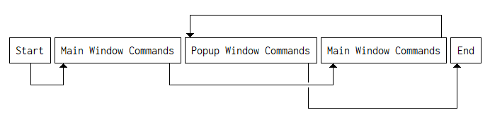

This write-up outlines some of the implementation details of the microui library. At the time of writing this microui is version 2.01
Microui is a tiny immediate mode UI library written in portable ANSI C — the library itself doesn't do any drawing but instead takes user input events (eg. mouse clicks and key presses), processes the UI and generates an iterable list of draw commands (eg. "draw rectangle", "draw text"). The library's goals are as follows:
~1110 sloc) malloc or friends) Due to these goals, some of the choices made during its implementation differ from other immediate mode libraries, and thus the project might be less useful for certain scenarios. Generally the library is a good choice if:
At the beginning of each frame microui takes user input — this is done by
passing input events to the mu_input... functions. After handling input
mu_begin is called and the UI itself is processed, all controls must exist
within a window, thus the mu_begin_window function must be the next thing
called.
Microui uses a number of stacks internally:
container_stack: stack of all current containers (windows and panels) clip_stack: current "clipping" rectangle — when a clipping rectangle is pushed it is intersected with the last rectangle on this stack id_stack: when a control id is generated (mu_get_id) the id at the top of this stack is used as its initial hash. An id in microui is a 32bit unsigned integer layout_stack: the current state of the UI layout, eg. where the next control should be placed, current indentation level, dimensions of the current layout region
When we call mu_begin_window an id is generated from the window title, the
mu_Container for that window is pushed to the container_stack, the generated
id is pushed to the id_stack, and a new mu_Layout is initialised to the size
of the windows body and pushed to the layout_stack.
Processing a button in the UI using mu_button, the function would first
advance the layout system to get a rectangle representing where it will be
placed (mu_layout_next), generate a unique id from the buttons name
(mu_get_id), and update the focus and hover ids of the context based on
the mouse state, window states and currently-clipped region
(mu_update_control) before finally handling any control-specific behaviour and
pushing draw commands.
To determine whether a control is currently being hovered over by the user we
first check to make sure the control's rectangle overlaps the mouse position, we
then iterate down from the top of the container_stack to find the
root-container we're currently in (that is, a container which is a window rather
than a panel) and make sure that the root container matches the context's
hover_root pointer, indicating that it is the root-container which the mouse
is currently over; this is done such that a window above the button will prevent
that button from being considered "hovered" over.
As the windows aren't necessarily processed in the order they will eventually
appear, the hover_root value is set each frame: the current frame uses the
previous frame's hovered-over-window and thus always lags one frame behind. In
practise this is effectively unnoticeable.
This has to be done as we won't know the state of all the windows until the frame is finished, in fact we won't even know which windows exist until we've finished processing the UI for a given frame.
As microui uses a fixed sized region of memory, a single command list, and allows the windows to be processed in any order regardless of their z-order, a unique approach is taken to assure that when the user iterates the draw commands in the command list, that they are in bottom-to-top order.
Each time mu_window_begin is called a pointer to the current position in the
command list is stored by the window, and a "jump" command is pushed to the
command list with a NULL pointer. When mu_window_end is called another jump
command is pushed to the command list with a NULL pointer; the initially pushed
jump command's pointer is then set to the now-current position of the command
list, that is, the position where all the window's commands end.
At the end of the frame all the windows from that frame are sorted by their
zindex and have the jump command's pointer set to the beginning of the
window-above-it's commands. The first jump command in the command list is set to
go to the lowest window and the top-most window's jump command is set to go to
the end of the command list.
Thus if we processed a frame as the following:
begin_main_window
do_some_ui_stuff
begin_popup_window
do_some_popup_ui_stuff
end_popup_window
do_some_ui_stuff
end_main_window
The resultant command list would exist in memory as the following blocks, with the jump commands and their destinations shown as the lines connecting the blocks:

The jump commands are handled internally by microui inside the mu_next_command
function, and are thus something the user doesn't need to worry about in normal
usage.
The approach of having a single command list for all windows allows us to have much simpler code as opposed to an approach where we would have a command list per-window. We only need to keep track of and manage a single buffer which everything is pushed to linearly vs having multiple buffers all of which would be partially filled with commands.
An additional perk of the single command list is that at the end of the frame the command list itself can be hashed and compared with the previous frame's hash to see if anything on screen has actually changed. If nothing has changed then drawing can be skipped for that frame.
mu_get_id(ctx, &ctx->command_list, sizeof(ctx->command_list))
As with all immediate mode UI some state still needs to be retained — eg. scroll bars, content sizes, window position/sizes and tree-node states. Typically this is done by mapping the id for a given control or window to its state internally, this is what microui does.
An issue arises then that given the nature of immediate mode UI we never know for sure if a control or window is no longer in use, thus how do we know when we'd be able to free the state for that control or window?
Microui employs the use of internal fixed-sized pools to store this state, and
to solve the issue of knowing which state in the pool it can stop retaining
employs a "forgetful" approach: for each piece of state (eg, a window's
container) that's stored internally, a last_updated value is kept which
represents the last frame in which the given window or control was processed in
the UI. When we begin a window which has no state stored internally and we have
no remaining slots in the pool, we simply find the least-recently-updated state
and reinitialise this slot, claiming it for the current window.
A disadvantage to this approach is that we have a hard limit on the amount of
windows we can have active at the same time, or visible tree-nodes in a
non-default position. Microui uses a pool of 48 window containers thus we can
only display 48 windows or panels at a time, for context this is what 48 windows
actually looks like:
In normal usage it's hard to imagine this being an issue, that being said the pool's upper limit can be trivially increased by changing a single constant in the code if needs be.
The consequence of a piece of state being "reclaimed" is simply that that window or control is reset to its default value. In typical usage the reclaiming ends up effectively unnoticeable as generally transient popup windows or tree-node states which haven't been interacted with for a while are those reset to their default value if a lot of other activity has occurred in the time since. It's not hard to imagine that the UI would be less "forgetful" than a typical user, and thus the resetting of "old" state would go unnoticed.
One additional perk of this approach is that because all state exists in fixed
sized buffers we can store the current state of the UI to a binary file by
simply dumping the memory of the state pools (along with the context's
last_zindex and frame). When the application next starts this file can be
loaded to restore the state of the UI.